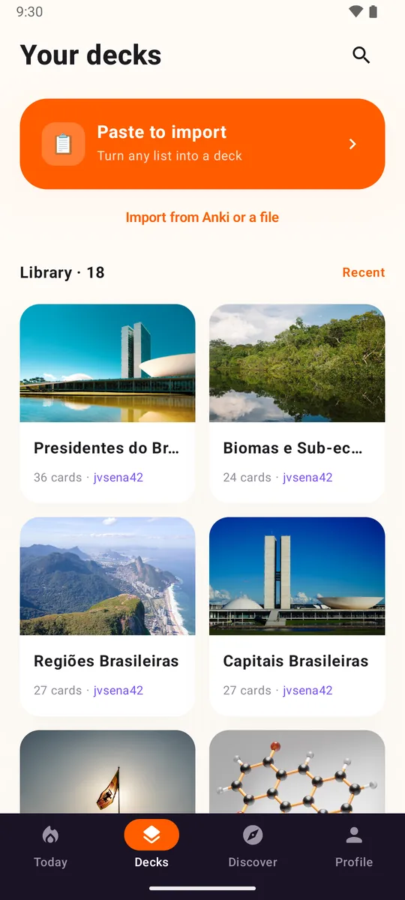

Vos paquets vous suivent
Le texte, les images et les textes à trous s’importent depuis des fichiers .apkg, .txt et .csv.
Pour les utilisateurs d’Anki
Loopky ouvre vos fichiers .apkg, puis ajoute l’écoute, l’oral, le partage et des cartes écrites par l’IA. Sans extensions, sans frais.
Gratuit. Sans pub. Open source.

Le texte, les images et les textes à trous s’importent depuis des fichiers .apkg, .txt et .csv.
La synthèse vocale et la vérification de prononciation sont intégrées, en 35 langues.
Publiez un paquet : tout le monde peut le suivre ou le cloner.
Affichage sur deux volets sur tablette, et un outil en ligne de commande pour gérer les paquets en masse.
Sur tablette, Loopky affiche deux volets : la file du jour à côté de vos paquets, un paquet à côté de ses cartes. Tablettes Android dès maintenant, iPad avec l’appli iOS.

| Depuis Anki | Dans Loopky |
|---|---|
| Texte et champs | Oui, vous choisissez le recto et le verso |
| Images | Oui |
| Textes à trous | Oui, une carte par trou |
| Cartes inversées | Oui |
| Audio | Non, utilisez la synthèse vocale intégrée |
| LaTeX | Affiché en code source |
| Historique de révision | Non, les cartes repartent de zéro |
Fichiers .anki21b récents : exportez à nouveau en cochant "Support older Anki versions" (prendre en charge les anciennes versions d’Anki).
L’outil en ligne de commande de Loopky fonctionne sous Windows, macOS et Linux.
Dans Anki, exportez le paquet en .apkg avec les médias. Ouvrez-le dans Loopky et choisissez les champs recto et verso. Vous n’avez qu’une liste ? Collez-la.

Pour la plupart des gens, oui. Vérifiez d’abord si vous dépendez de fichiers audio, de LaTeX, de modèles de cartes personnalisés ou de FSRS.
Non. Chaque bouton de notation a un intervalle fixe que vous réglez, de 1 à 365 jours.
Oui. Sans pub, sans abonnement, et open source sous licence MIT.
Loopky est sur Android pour l’instant. L’appli iOS est prête et arrive bientôt.
Quelques minutes par jour suffisent.